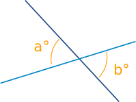
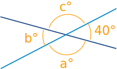

Vertically Opposite Angles
Vertically Opposite Angles are the angles opposite each other when two lines cross
"Vertical" in this case means they share the same Vertex (corner point), not the usual meaning of up-down.

Example: a° and b° are vertically opposite angles.
The interesting thing here is that vertically opposite angles are equal:
a° = b°
(in fact they are congruent angles)
Have a play with them yourself. Notice how the 4 angles are actually two pairs of "vertically opposite angles":
images/geom-vert-angles.js
Example: Find angles a°, b° and c° below:

Because b° is vertically opposite 40°, it must also be 40°
A full circle is 360°, so that leaves 360° − 2×40° = 280°
Angles a° and c° are also vertically opposite angles, so must be equal, which means they are 140° each.
Answer: a = 140°, b = 40° and c = 140°.
Note: They are also called Vertical Angles, which is just another way of saying the same thing.
2121, 2122